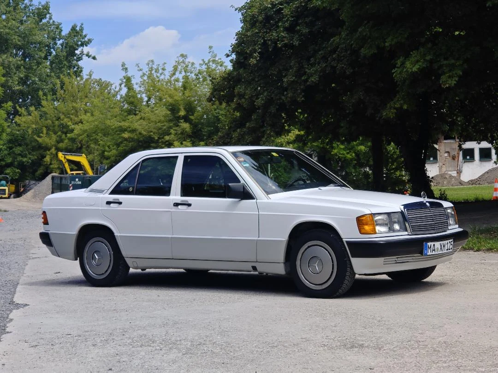

BMD / PROJEKT 001
DER KLASSIKER
Mercedes-Benz 190 E
Außen. Innen. Bis ins Detail.
GENAU HINSEHEN LOHNT SICH.
Auch dort,
wo keiner
hinschaut.
Glänzender Lack ist der Anfang. Zur Aufbereitung gehören auch die Stellen, an denen sich über die Jahre Spuren sammeln.
Das Handwerk dahinter ↘← SauberDreckig →
Balken ziehen oder Pfeiltasten nutzen. Links: komplett sauber. Rechts: komplett dreckig.
Originalaufnahmen aus unterschiedlichen Blickwinkeln.